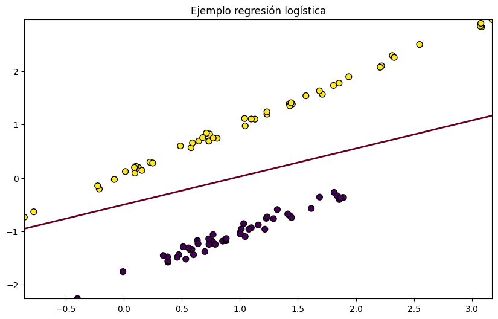
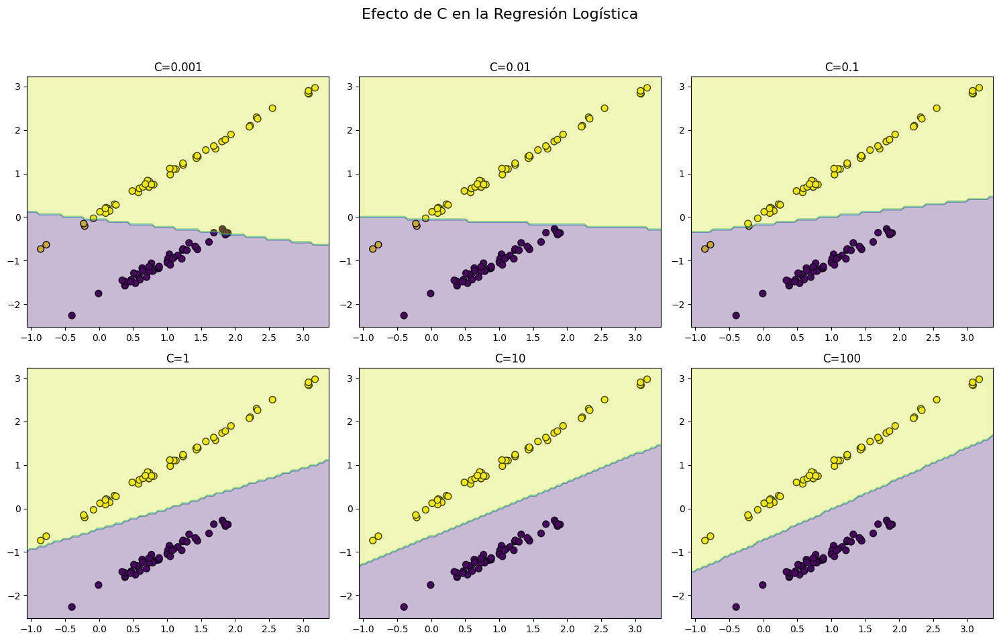

Regresión logística#
La regresión logística es una técnica fundamental en estadísticas y aprendizaje automático que se emplea para abordar problemas de clasificación. A pesar de su nombre, la regresión logística se utiliza para predecir la probabilidad de que una instancia pertenezca a una categoría específica. Este modelo es particularmente efectivo en situaciones donde la variable de salida es binaria, es decir, tiene dos posibles resultados, como “éxito” o “fracaso”.
{kind=link}
La regresión logística modela la relación entre las características de entrada (predictores) y la probabilidad de pertenecer a una clase específica. Utiliza la función logística (también conocida como sigmoid) para transformar la salida a un rango entre 0 y 1, que puede interpretarse como la probabilidad.
Con base en la probabilidad estimada, se establece una frontera de decisión. Si la probabilidad es mayor que un umbral (generalmente 0.5), se clasifica como una clase; de lo contrario, se clasifica como la otra clase.
Hiperparámetros de la Regresión logística#
A continuación se muestran algunos de los hiperparámetros que podemos utilizar en la regresión logística:
| HIPERPARÁMETROS DE UNA REGRESIÓN LOGÍSTICA | |||
|---|---|---|---|
| penalty | Especifica la norma utilizada en la penalización. Puede ser "l1", "l2", "elasticnet" o "none". La penalización es útil para evitar el sobreajuste. | ||
| C | Inversa de la fuerza de regularización. Valores más pequeños especifican una regularización más fuerte. | ||
| solver | Algoritmo a utilizar en la optimización. Algunas opciones comunes son "liblinear", "newton-cg", "lbfgs", "sag" y "saga". | max_iter | Número máximo de iteraciones para la convergencia del algoritmo. | fit_intercept | Indica si debe calcularse o no la intersección (también conocida como sesgo o bias). | class_weight | Puede tomar valores como "balanced" para ajustar automáticamente los pesos de las clases según la frecuencia de las mismas. | random_state | Semilla utilizada por el generador de números pseudoaleatorios. | multi_class | Indica cómo manejar problemas de clasificación multiclase. Puede ser "ovr" (One-vs-Rest) o "multinomial" (Softmax). |
Vamos a ver como afectan algunos de estos parámetros al entrenamiento del modelo.
Efectos de penalty en la Regresión logística#
El parámetro penalty en la regresión logística controla la aplicación de la regularización para prevenir el sobreajuste. La regularización es una técnica que penaliza los coeficientes del modelo, evitando que tomen valores extremadamente grandes. En scikit-learn, dos valores comunes para el parámetro penalty son ‘l1’ (regularización L1) y ‘l2’ (regularización L2).
Introducir un penalización L1 favorece la dispersión de los coeficientes y puede conducir a la selección de características (algunos coeficientes se vuelven exactamente cero). Esto es útil cuando se sospecha que algunas características son irrelevantes o ruido.
Por otro lado, introducir un penalización L2 favorece coeficientes más equilibrados y puede ayudar a evitar el sobreajuste. L2 no conduce a la selección de características, ya que todos los coeficientes tienden a ser no nulos.
Efectos de C en la Regresión logística#
El parámetro C en la regresión logística controla la fuerza de regularización aplicada al modelo. La regularización es una técnica utilizada para prevenir el sobreajuste al penalizar los coeficientes del modelo cuando son demasiado grandes. El parámetro C es la inversa de la fuerza de regularización; por lo tanto, valores más pequeños de C indican una regularización más fuerte, mientras que valores mayores permiten una regularización más débil.
{kind=link}
Cuando C es pequeña, la regularización es fuerte, lo que significa que los coeficientes del modelo se ven más afectados y se les penaliza por tener valores grandes. Esto puede resultar en un modelo más simple y menos propenso al sobreajuste. Es útil cuando se sospecha que hay demasiado ruido o variables irrelevantes en los datos.
Por otro lado, cuando C es grande, la regularización es débil, lo que permite que los coeficientes del modelo tengan valores más grandes. En este caso, el modelo se ajustará más a los datos de entrenamiento, incluso a características ruidosas, y podría ser más propenso al sobreajuste si los datos de entrenamiento son ruidosos o si hay demasiadas características.
Solver#
El parámetro solver en la regresión logística controla el algoritmo utilizado para optimizar los pesos del modelo durante el proceso de entrenamiento. Diferentes algoritmos pueden comportarse de manera diferente en términos de velocidad de convergencia y eficiencia, y la elección del solver puede afectar el rendimiento del modelo en términos de tiempo de entrenamiento y precisión:
solver=’liblinear’: Es adecuado para conjuntos de datos pequeños y es una opción sólida para la clasificación binaria.
solver=’lbfgs’: Es una opción eficiente para conjuntos de datos grandes y pequeños. Utiliza el método de optimización de Broyden–Fletcher–Goldfarb–Shanno (BFGS).
solver=’newton-cg’:Utiliza el método de Newton-Conjugate Gradient. Es apropiado para problemas de clasificación multiclase y requiere la inversión de matrices Hessianas durante el entrenamiento.
solver=’sag’: Utiliza el método de promedio estocástico de gradientes (Stochastic Average Gradient). Es eficiente para conjuntos de datos grandes y puede ser más rápido que otros métodos en conjuntos de datos grandes.
solver=’saga’: Es una versión mejorada del solver ‘sag’ y también es adecuado para conjuntos de datos grandes. Incorpora características adicionales como penalización elástica y manejo eficiente de la regularización.